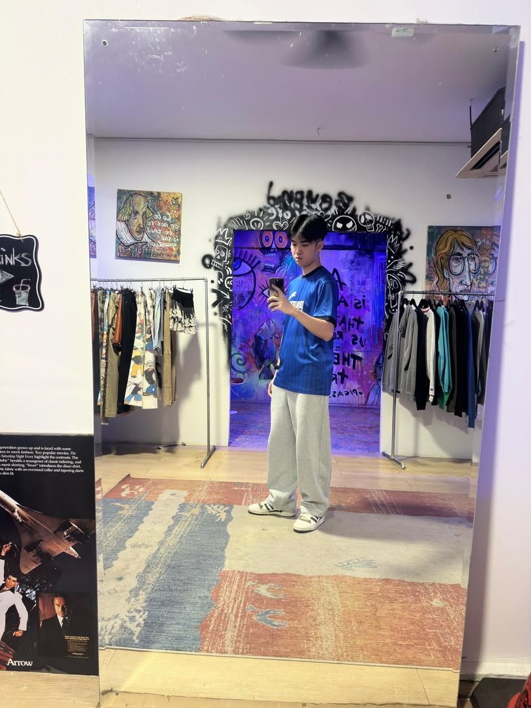

My name is Lim Zhi Ian. I am 19 years old. I am currently studying Diploma in Digital Media Design at Dasein Academy. I have a strong interest in photography, web development and user interface (UI) design because I admired the creativity of ideas that digital media designers creating digital experiences that are both functional and visually appealing. I am passionate about learning new technologies, improving my design skills and understanding of user experience (UX) principles to create engaging and user-friendly digital products. I love listening to music, play badminton, drawing and sleep during my leisure time. I hope to become a successful web developer in the future and contribute to the development of the future digital media design industry.
One of my favorite hobbies is sketching, as it allows me to express my creativity and bring my ideas to life through art. I enjoy drawing different subjects, from people and characters to everyday objects and scenery. Another hobby I am passionate about is photography. I love capturing beautiful moments, interesting perspectives, and details that others might overlook. Both sketching and photography help me develop my creativity, observation skills, and appreciation for visual storytelling. Through these hobbies, I continue to explore new ways of expressing myself and improving my artistic abilities.
